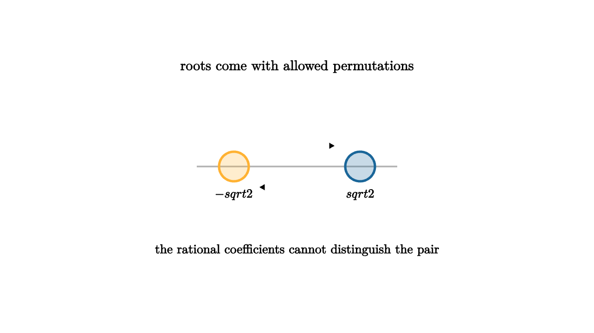

Galois Theory Turns Roots Into Symmetry
Solving a polynomial can feel like hunting for numbers. Galois theory changes the target. Instead of staring at one root at a time, it asks which symmetries of the full set of roots preserve the arithmetic relations known from the coefficients.
Start with a quadratic:
Its roots are sqrt(2) and -sqrt(2). If we are working over the rational numbers, the two roots are algebraic twins. Any rational equation true of one root after naming sqrt(2) has a corresponding equation true after swapping it with -sqrt(2). The Galois group has two elements: keep both roots fixed, or swap them.

source
let Root = |pos, label, col| [
center{pos} fill{alpha{0.24} col} stroke{col, 3} Circle(0.2),
center{pos + 0.38d} Tex(label, 0.60)
]
mesh scene = [
center{1.35u} Text("roots come with allowed permutations", 0.68),
stroke{LIGHT_GRAY, 2} Line([-1.35, 0, 0], [1.35, 0, 0]),
Root([-0.85, 0, 0], "-\\sqrt{2}", ORANGE),
Root([0.85, 0, 0], "\\sqrt{2}", BLUE),
stroke{WHITE, 4} Arrow([-0.55, 0.28, 0], [0.55, 0.28, 0]),
stroke{WHITE, 4} Arrow([0.55, -0.28, 0], [-0.55, -0.28, 0]),
center{1.13d} Text("the rational coefficients cannot distinguish the pair", 0.62)
]For higher-degree polynomials, the root symmetries can be richer. A cubic might have three roots whose allowed permutations form all of S_3, or only a smaller subgroup. The Galois group is made of field automorphisms of the splitting field that fix the base field. In friendlier words, it is the set of ways to rename the roots while preserving all algebraic truths stated with base-field coefficients.
source
let TriangleRoots = |turn| {
let a = turn * TAU / 3
let p = |offset| [0.78 * sin(a + offset), 0.78 * cos(a + offset), 0]
let p1 = p(0)
let p2 = p(2 * TAU / 3)
let p3 = p(4 * TAU / 3)
return [
center{p1} fill{alpha{0.24} BLUE} stroke{BLUE, 3} Circle(0.18),
center{p2} fill{alpha{0.24} ORANGE} stroke{ORANGE, 3} Circle(0.18),
center{p3} fill{alpha{0.24} TEAL} stroke{TEAL, 3} Circle(0.18),
stroke{LIGHT_GRAY, 2} Triangle(p1, p2, p3)
]
}
"Roots"
mesh title = center{1.34u} Text("a polynomial sees relations among all roots", 0.64)
mesh roots = TriangleRoots(0)
mesh note = center{1.16d} Text("permutations are tested against algebraic relations", 0.62)
play Fade(0.7)
play Write(0.7)
"Rename"
roots = TriangleRoots(1)
play Lerp(1.1)
note = center{1.16d} Text("a legal rename preserves every base-field equation", 0.62)
play Trans(0.6)
"Restrict"
roots = [
TriangleRoots(1),
stroke{MAGENTA, 5} Line([-0.68, -0.39, 0], [0.68, -0.39, 0]),
center{[0, -0.92, 0]} Text("extra known structure shrinks symmetry", 0.62)
]
play Trans(1.0)The splitting field is the smallest field containing the base field and all roots of the polynomial. For x^2 - 2, it is Q(sqrt(2)). For x^3 - 2, it includes the real cube root of 2 and also complex cube roots of unity. The field must contain every root before the full permutation story can be told.
One of the central miracles is the Galois correspondence. Subgroups of the Galois group match intermediate fields between the base field and the splitting field. A larger subgroup fixes a smaller field because more symmetries leave fewer elements unchanged. A smaller subgroup fixes a larger field because fewer symmetries impose fewer constraints.
This turns equations into a reversible dictionary:
The classical drama concerns formulas by radicals. Quadratic equations have a radical formula. Cubics and quartics also have radical formulas, although they are harder to use. General quintic equations have no universal radical formula. Galois theory explains this through group structure. A polynomial is solvable by radicals when its Galois group has a chain of subgroups whose quotient pieces are abelian in the right way. Some quintics have Galois group S_5, and that group is too noncommutative for such a chain.
This is a better explanation than "the formula is too complicated." The obstruction is structural. The root symmetries themselves refuse to be resolved by successive radical choices.
Galois theory also reaches far beyond old equation-solving questions. Number theory uses Galois groups to organize how primes split in extensions. Algebraic geometry studies coverings and fundamental groups through similar symmetry ideas. Modern cryptography and coding theory use finite fields whose automorphisms are Galois symmetries. Even when the roots are abstract, the principle stays visual: a collection of objects is understood by the transformations that preserve its relations.
The lesson in this algebra series is that roots are not isolated trophies. They form a configuration. The coefficients impose relations on that configuration. The Galois group is the motion group of the roots under those relations, and that group tells us what kind of solution the polynomial can reasonably have.